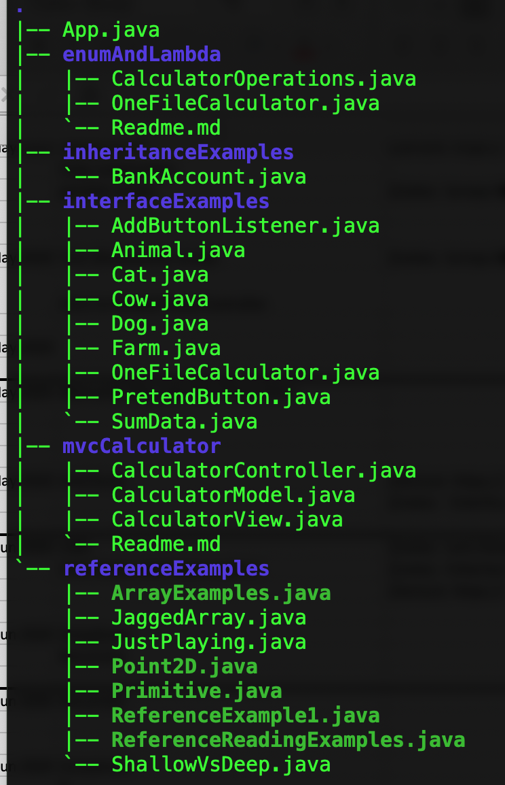
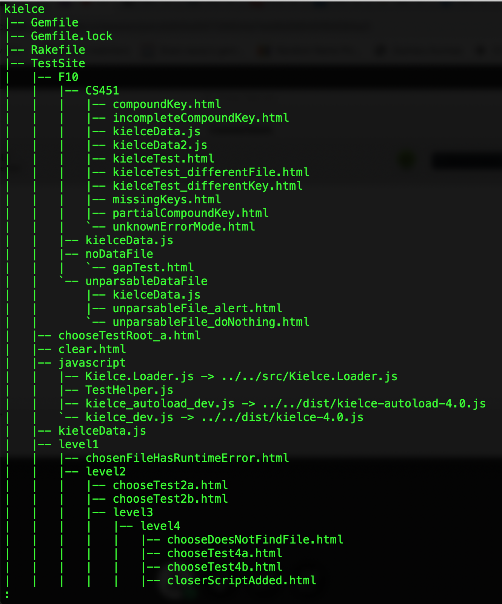

Recursion
- How are Fibonacci numbers defined?
F(n) = 1 if n == 1 or n == 2, else f(n -1)+ f(n-2)
- Code directly from the definition.
- Code the iterative way.
- Which is easier to follow?
- How could you define factorial recursively?
f(n) = 1 if n = 0 or 1, else n*f(n-1)
- Write
factorial recursively.
- All recursive problems need a base case (otherwise, the algorithm won’t terminate.)
- If you’ve studied induction before, some of this will feel similar.
Recursive thinking
- The trick to using recursion is to think define a problem as a smaller version of itself.
- All vowels:
- Suppose you had a magic function that told you whether a string of length
n contained only vowels. How could you check if a string of length n + 1 contained only vowels?
- Write the code.
- Palindrome:
- How could you define
isPalindrome recursively?
- Write the code.
- How would you define a list mathematically?
- How can you define a list recursively?
- implement
int maxValue(int[] stuff) recursively.
- Hint: use a helper method.
Non-tail recursion
- The problems we’ve seen thus far don’t really show the true power of recursion. The problems we’ve seen work pretty well iteratively. Some problems only work well recursively.
- In particular, problems that make more than one recursive call are difficult to write iteratively.
- Imagine you wanted to search your entire hard disk for a file. How would you do that?
- You would probably do a depth-first search.
- You would need some way to keep track of where you were at each level.
- Recursion does that for you for free.
- Recursion creates a “stack” of method calls. This stack contains both the local variables and the return location for each method call. The local variables and return location on this stack serve as your “breadcrumbs” that keeps track of where you’ve been.
- Look at
FileCounter.java
-  
- The local loop variable
f keeps track of where we are at each level.
- Look at
Maze.java
- The return value keeps track of which direction we are evaluating.
- Look at
groupSum from CodingBat: https://codingbat.com/prob/p145416